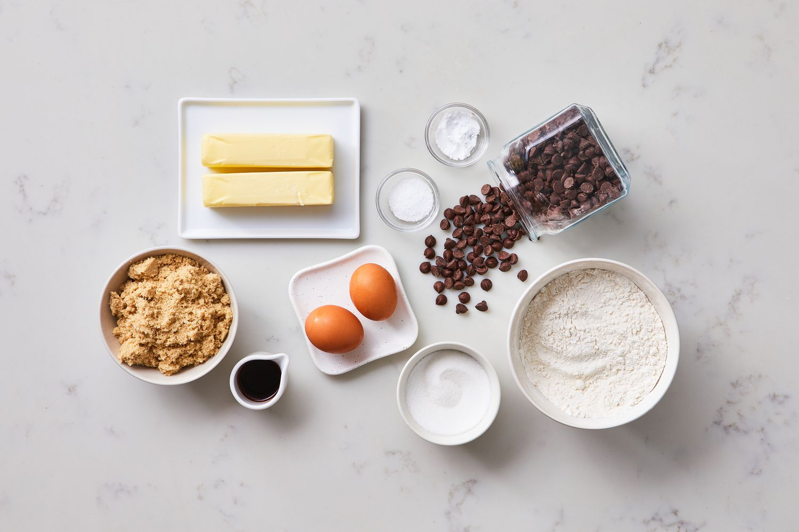
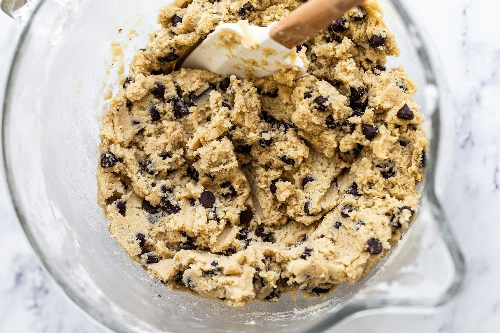
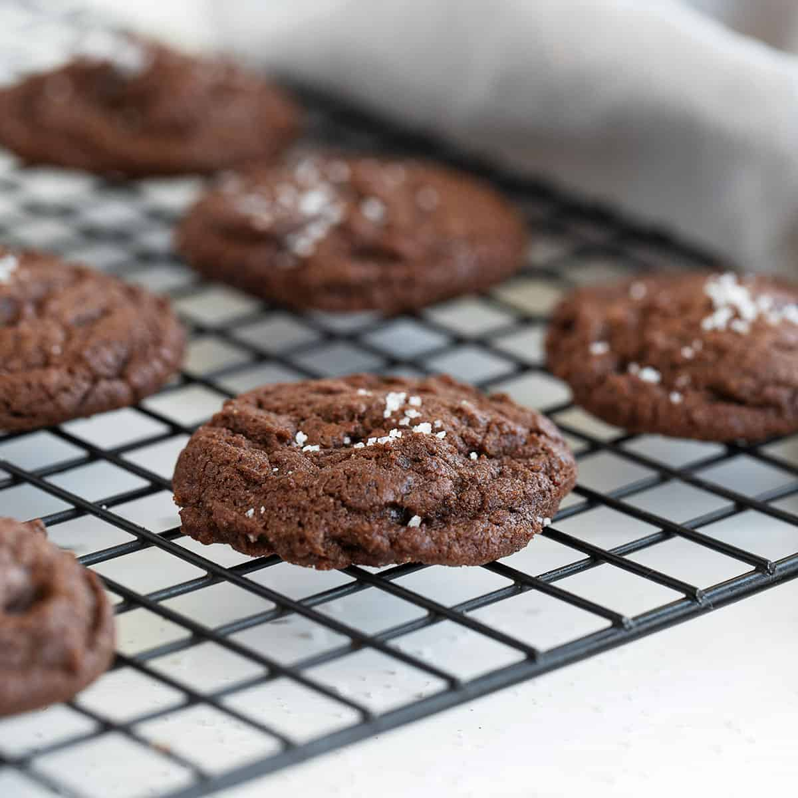
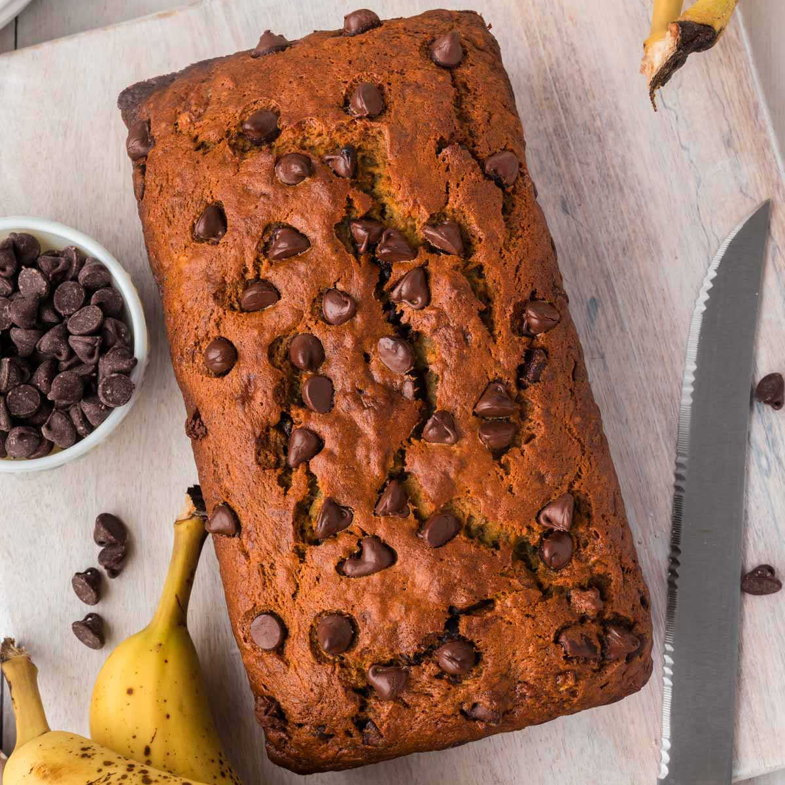
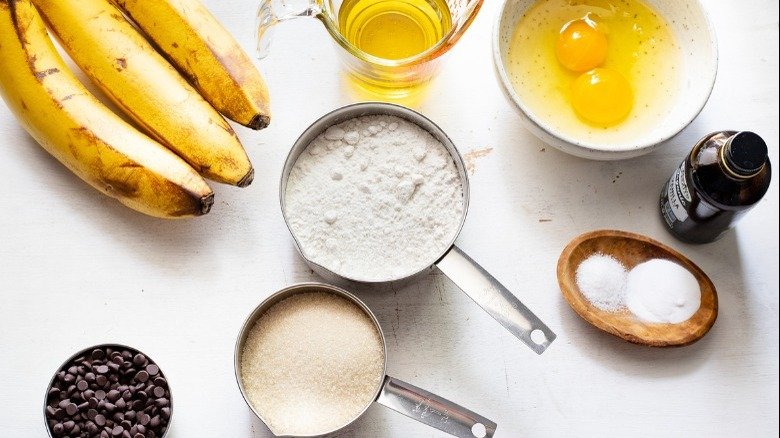
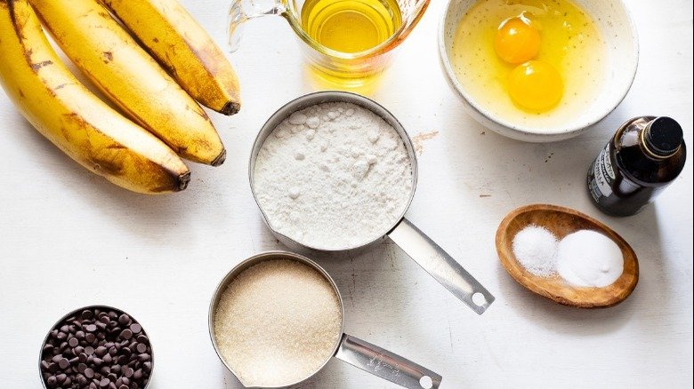
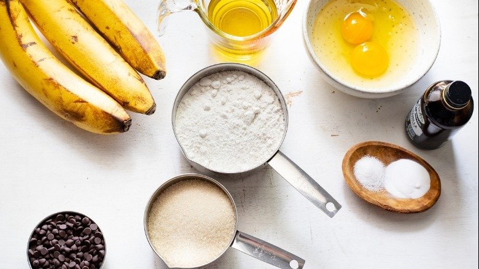
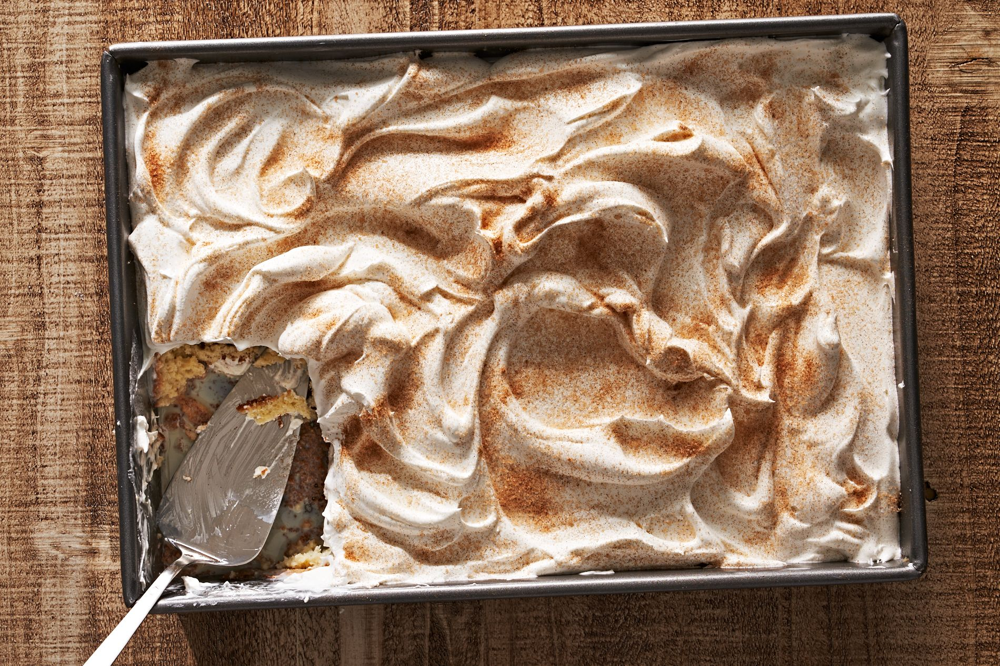
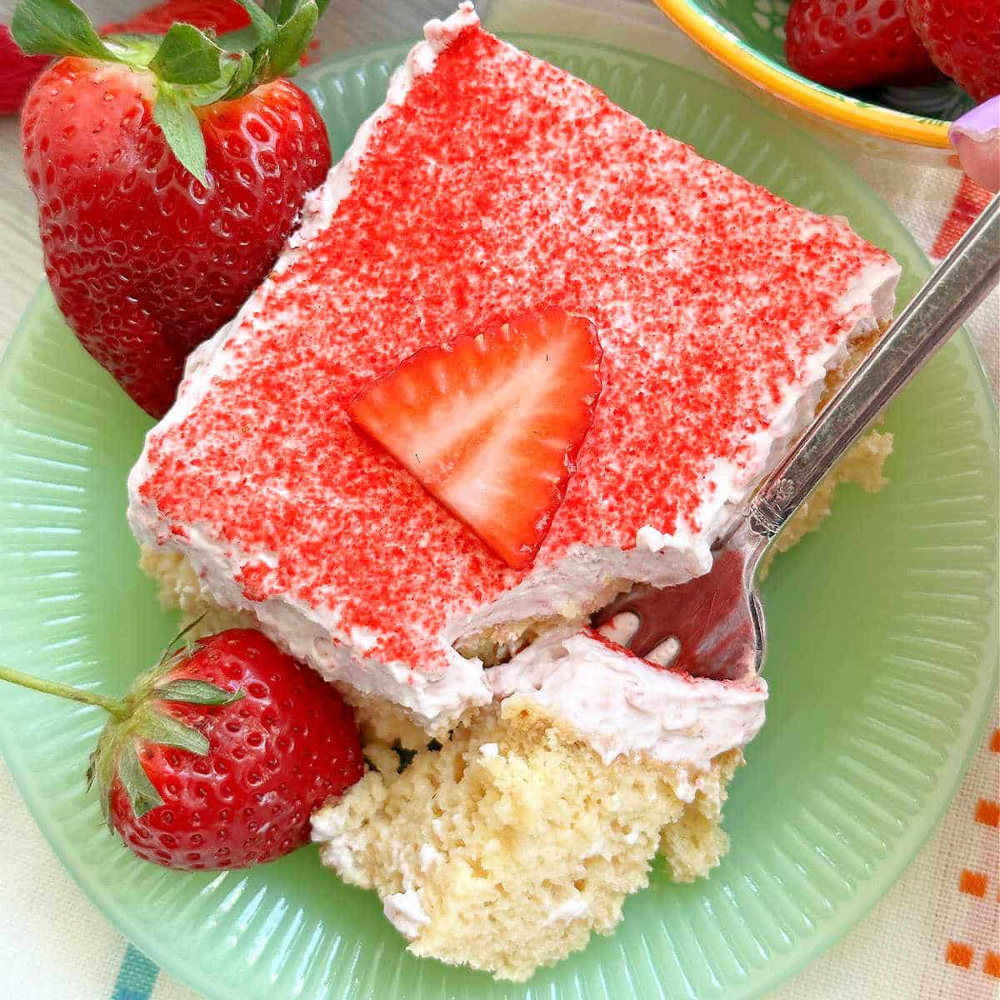
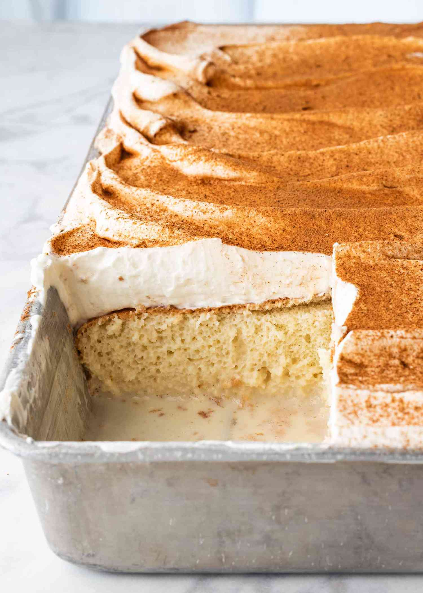

Take a look at these recipes below!
Double Chocolate Cookies
- Origin: Michigan
- Source: Family Recipe
- Category: Dessert

These cookies are a family favorite. They are soft, chewy, and full of chocolate. They are perfect for any occasion and are sure to be a crowd pleaser.
Recipe Ingredients
- Unsalted butter
- Granulated Sugar
- Packed light or dark brown sugar
- 1 Large egg
- Pure vanilla extract
- Semi-sweet chocolate chunks (melted)
- All-purpose flour
- Natural unsweetened cocoa powder
- Baking soda
- Salt
Recipe Steps
- In a mixing bowl cream together the butter, granulated sugar, and brown sugar.
- Add the egg and vanilla extract and beat well.
- Add the melted chocolate.
- In a separate bowl combine the flour, baking soda, cocoa powder and salt.
- Combine the wet and dry ingredients.
- Add the unmelted chocolate chunks.
- Form 15 cookies and place on a baking sheet.
- Bake at 350 degrees for 10-12 minutes.
Additional Food Images



Chocolate Chip Banana Bread
- Origin: American
- Source: Friend's Recipe
- Category: Dessert
This is a tried-and-tested recipe that I have used numerous times for making the perfect chocolate chip banana bread! Not only does it help utilize the bananas that have slowly overripened at the back of the fridge, it ends up creating an incredibly delicious, and relatively healthy, dessert.
Recipe Ingredients
- Cooking spray
- 2 cups (240 g) all-purpose flour
- 1 tsp. baking soda
- 1/2 tsp. kosher salt
- 1 large egg plus 1 egg yolk
- 1 cup (200 g) granulated sugar
- 1/2 cup (1 stick) unsalted butter, melted
- 1/4 cup sour cream
- 1 tsp. pure vanilla extract
- 3 ripe bananas, mashed
- 1/2 cup chopped toasted walnuts
- 1/2 cup semisweet chocolate chips
Recipe Steps
- Preheat the oven to 350º. Line a 9"-by-5" loaf pan with parchment and grease with cooking spray.
- In a medium bowl, whisk flour, baking soda, and salt.
- In a large bowl, mix egg, egg yolk, granulated sugar, butter, sour cream, and vanilla. Add bananas and stir until combined. Gradually add dry ingredients to banana mixture until just combined.
- Fold in walnuts and chocolate chips and transfer to prepared pan.
- Bake bread until a tester inserted into the center comes out clean, about 1 hour. Let cool 10 minutes in pan, then invert onto a wire rack and let cool completely.
Additional Food Images

 


Tres Leches
- Origin: Mexican
- Source: faily Recipe
- Category: Dessert
The BEST authentic homemade Tres Leches Cake. An ultra light cake soaked in a sweet milk mixture and topped with fresh whipped cream and cinnamon. This simple Mexican dessert is one of our favorites!
Recipe Ingredients
- 1 cup all-purpose flour
- 1 1/2 teaspoons baking powder
- 1/4 teaspoon salt
- 5 large eggs , separated
- 1 cup granulated sugar , divided
- 1/3 cup whole milk
- 1 teaspoon vanilla extract
- 12 ounce can evaporated milk
- 4 ounce can sweetened condensed milk
- 1/4 cup whole milk
- 1 pint heavy whipping cream
- 3 Tablespoons powdered sugar
- 1/2 teaspoon vanilla extract
- Ground cinnamon , for topping
Recipe Steps
- Preheat oven to 350 degrees F.
- In a medium bowl combine flour, baking powder, and salt. Separate the eggs into two other mixing bowls.
- Add ¾ cup sugar to the bowl with the egg yolks and mix on high speed until yolks are pale yellow. Add ⅓ cup milk and vanilla and stir to combine. Pour the egg yolk mixture over the flour mixture and stir gently just until combined (don't over-mix).
- Use electric beaters to beat the egg whites on high speed. As the begin to whip into stiff peaks, gradually mix in the remaining ¼ cup of sugar. Fold the stiffly beaten egg whites into the batter gently, scraping the bottom and sides of the bowl, until combined.
- Pour batter into un-greased pan and smooth it into an even layer. Bake for 25 to 35 minutes, or until a toothpick inserted in the center of the cake comes out clean. Remove from the oven and allow cake to cool completely.
- Combine the evaporated milk, sweetened condensed milk, and whole milk in a small bowl. Once the cake has cooled use a fork to poke holes all over the top of the cake. Slowly pour the milk mixture over the the top of the cake, making sure to pour near the edges and all around.
- Refrigerate the cake for at least 1 hour or overnight, to allow it to soak up the milk.
- Whip the heavy cream, powdered sugar and vanilla until stiff peaks form. Smooth over the top of the cake. Sprinkle cinnamon on top. Serve with fresh sliced strawberries, if desired.
Additional Food Images


